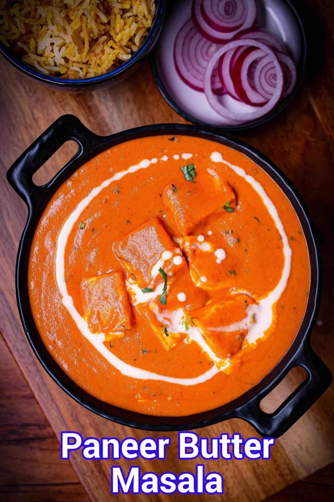
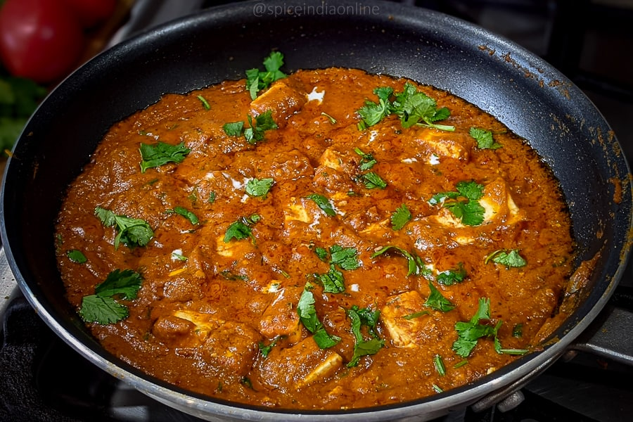
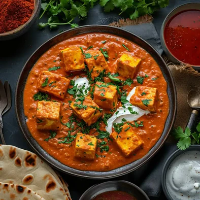

🥗 Vegetarian | Main Course
A rich, creamy North Indian curry loved by everyone

Paneer Butter Masala is one of the most popular North Indian curries known for its rich, creamy texture and mildly sweet-spicy taste. Made with soft paneer cubes in a buttery tomato gravy, it pairs perfectly with roti, naan, or rice.


Store in an airtight container in the refrigerator for 2–3 days. Reheat on stovetop or microwave with a little water for consistency.
Calories: 692 kcal | Carbohydrates: 16g | Protein: 23g | Fat: 61g
Disclaimer: Values are approximate and may vary.Have a recipe request or feedback? Let me know!